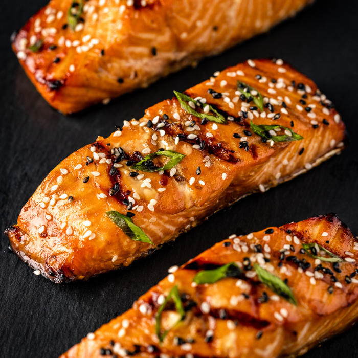

Teriyaki Salmon

Ingredients for Teriyaki Salmon
- Sesame Oil: The marinade for your salmon starts with a sesame oil base.
- Lemon Juice: Lemon juice adds a fresh kick and is a healthy addition.
- Soy Sauce: Soy sauce gives your marinade the savory flavor every teriyaki needs.
- Brown Sugar: Give your teriyaki the sweetness its needs with brown sugar.
- Sesame Seeds: A tablespoon of sesame seeds will give your marinade a nice crunchy texture.
- Spice/ Herbs: To make your marinade stand out add 3 garlic cloves (pressed or chopped), 3 chopped green onions, and minced fresh ginger.
- Salmon: 1-1.5 lbs of salmon filets.
How to Prepare
Follow the step-by-step below for your teriyaki salmon cooking instructions.
- Make the marinade on the stove. Combine equal parts of sesame oil, soy sauce, and brown sugar. Add 1-2 ounces of lemon juice, 2 tablespoons of sesame seeds, 3 pressed or minced garlic cloves, 3 chopped green onions, and 1 minced ginger root. Bring to a boil and reduce heat, let simmer for 15 minutes on low heat.
- Marindae your salmon filets in a zip-lock bag in the refrigerator for 1-2 hours.
- Grill or bake salmon at 375 degrees fahrenhiet for 10 minutes. Let rest for 5 minutes before plating.
Back to Home